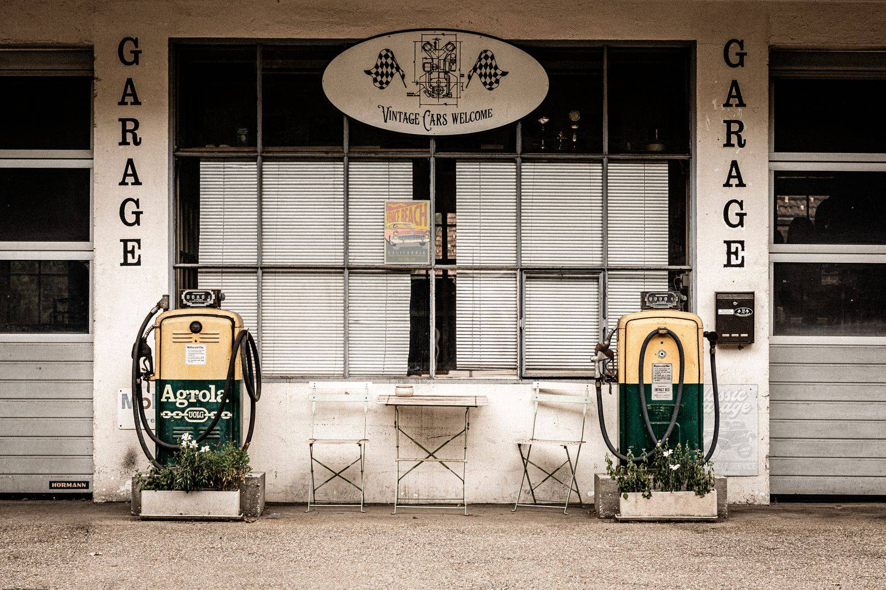
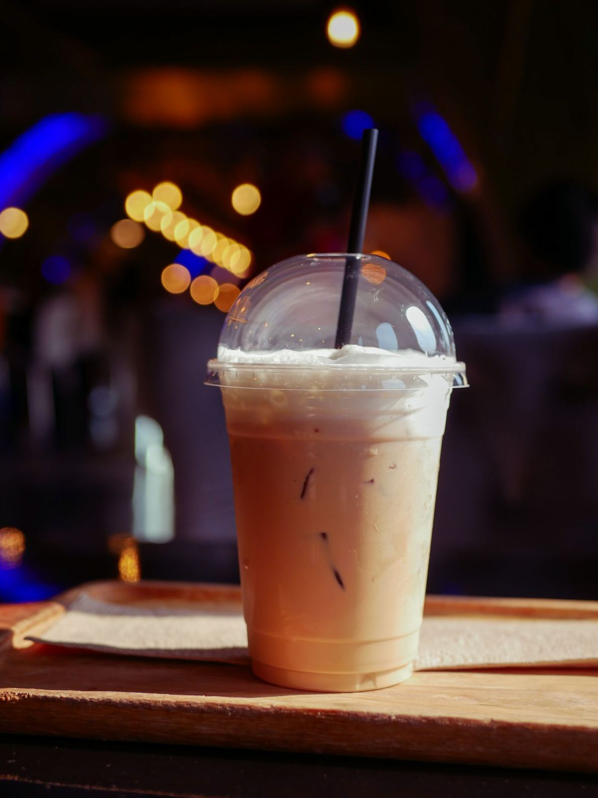

Coffee house - Foley, Alabama
Coffee served in a 1950s fuel station
Drowsy Poet pours locally roasted coffee, signature frozen drinks, and fresh-baked morning food out of a converted 1950s service station at The Foley Station. Drive through, take it to go, or stay a while on the covered patio.
Call (251) 952-1000 See the drinks
The station that became a coffee house
Drowsy Poet sits inside a 1950s fuel station at The Foley Station in Foley, Alabama. The pumps are gone, but the bones of the building remain: a roadside landmark turned into a neighborhood coffee stop.
Inside you will find the usual cafe rhythm. The shop offers drive-thru, takeout, dine-in, and delivery. Laptops open at the tables, and the espresso machine runs steady from open to close.
Everything is served with the literary wink the name promises, but the coffee is serious. Signature drinks on the board include the frozen Poetchino and the Shakespeare, plus seasonal specials like the King cake latte.
Why people stop here
Some of the signature drinks:
Signature drinks
The Poetchino, the Shakespeare, the Campfire mocha. House originals with a literary bent.
Drive-thru coffee
Roll through without leaving the car. Built for busy mornings on McKenzie Street.
Pet-friendly patio
A covered patio where dogs are welcome. Bring the leash, stay for the second cup.
Fresh morning food
Breakfast sandwiches, quiche, scones, and bagels with house-made spreads.
Frozen, famous, and named like a poem
The Poetchino is the drink people talk about: the shop's frozen signature, blended cold and built for Alabama heat. Around it sits a full menu of house originals, from the Shakespeare to the Samoa latte to the Campfire mocha.
Prefer it simple? Straight espresso drinks and drip coffee are poured all day.

Open seven days
Mon - Sat: 6:00 AM - 4:00 PM | Sun: 8:00 AM - 3:00 PM | 218 S McKenzie St, Foley, AL 36535